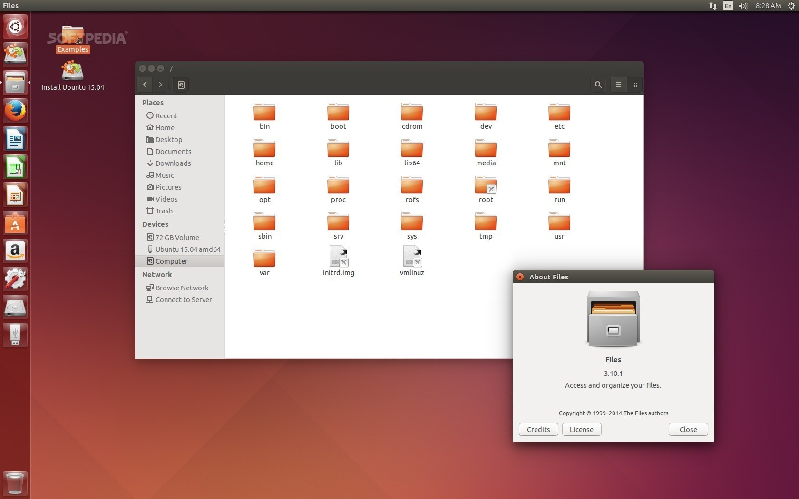

Linux
Linux, computer operating system created inside the early 1990s by Finnish software program engineer Linus Torvalds
and the Free Software Foundation (FSF).While nonetheless a student at the University of Helsinki, Torvalds started
out developing Linux to create a device similar to MINIS, a UNIX running machine. In 1991 he launched version 0.02;
Version 1.0 of the Linux kernel, the core of the working system, was launched in 1994. About the identical time,
American software developer Richard Stall-man and the FSF made efforts to create an open-source UNIX-like working
device referred to as GNU. In evaluation to Torvalds,Stall-man and the FSF began by growing utilities for the working
system first. These utilities were then delivered to the Linux kernel to create a complete system known as GNU/Linux,
or, much less precisely, just Linux.

Linux grew throughout the 1990s due to the efforts of hobbyist developers. Although Linux is not as user-pleasant as
the popular Microsoft Windows and Mac OS running structures, it's far an green and reliable gadget that hardly ever
crashes. Combined with Apache, an open-source Web server, Linux bills for extra than a 3rd of all servers used at the
Internet. Because it's far open source, and therefore modifiable for exceptional uses, Linux is famous for systems as
various as cell phones and supercomputers. The addition of user-friendly computer environments, office suites, Web
browsers, or even video games helped to increase Linux’s popularity and make it extra suitable for home and office
desktops. New distributions (applications of Linux software) were created at some point of the Nineteen Nineties.
Some of the greater famous distributions encompass Red Hat, Debian, and Slackware.